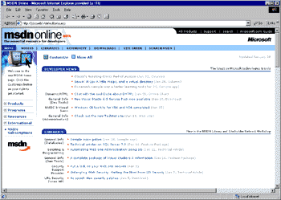
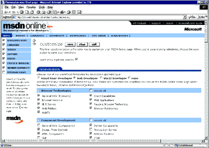
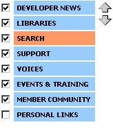
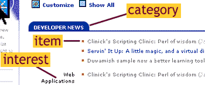
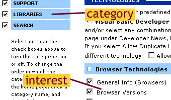
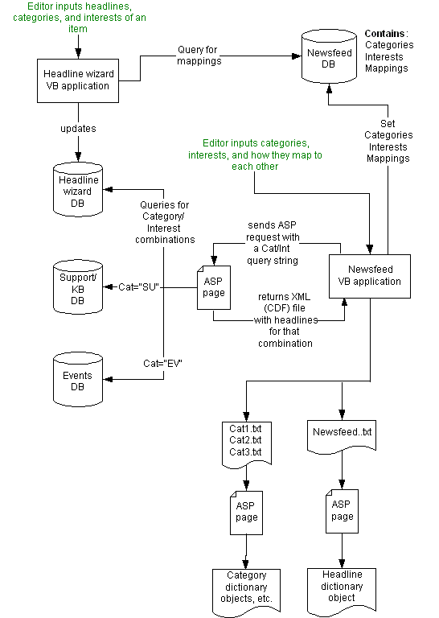

|
| ||
|
| ||
by Robert Carter
MSDN Technical Writer
February 15, 1999
Note This is the first article in a series documenting how we built the new MSDN Online. Since this went live, we've published two additional pieces:
"Abridging the Dictionary Object: The ASP Team Creates a Lookup-Table Object"
"Personalizing the Developer Start Page"

Figure 1. The new MSDN Online homepage after being customized
If you're reading this article, chances are you've already checked out the new MSDN Online home page. And perhaps you've also learned about how we're merging Microsoft's two developer Web sites, MSDN Online and Site Builder Network, into one easily searchable, comprehensive developer resource. In essence, we want to be your essential resource.
And since you're a developer, maybe you want to know how the new home page -- and our new developer customization page -- work? Here's the tale.
Actually, several tales, for there are lots of things we need to cover. We'll start with a description of how the new home page and its customization features work.
Future articles will cover other stuff, specifically the:
Anyone who's already visited Home.Microsoft.Com is familiar with our new interface. Both sites were, a-hem, developed by the same team -- ours. Both pages let you customize what you see, both pages give you headlines and links to information you're curious about. For the new MSDN Online, that means filtering news from dozens of diverse technology and tool areas. See that big icon and text labeled "Customize"? That's the first step. It takes you to a page listing all the technologies we cover. If you haven't the time or energy to sort out your specific interests, we can preselect for you a set of topics geared around common interests. To start, we offer a template that covers topics relevant to Web development. We'll add more templates in the future; let us know what you'd like to see. The template will select a set of topics for you. But if you want to deselect some, or add some more, go right ahead. Customization is the point, after all.

Figure 2. MSDN Online's new customization page
Most of the functionality of the customization page is accessible to all major browsers (Internet Explorer 3.0 and later, Netscape Navigator 3.0 and up, and Opera). From the client end, almost all you're doing is checking or unchecking boxes. (The fun stuff happens at our end, which we'll get to later.)
(If you're a real glutton for punishment, you can skip the customization page and select Show all directly from the home page. If you decide getting that many headlines is too much like drinking water from a fire hose, you can select the Show Previous View option that replaced Show all on the home page, and whatever customization options were set previously will be restored.)
If you happen to be running Internet Explorer 4.0 or 5, you can also determine the order in which categories appear every time you visit the home page. Highlight the category you're interested in (it turns orange once highlighted), click on either the up or down arrow that appears immediately to the right, and you can then change where that category is displayed.

Figure 3. Changing category display order (Internet Explorer 4.0 and above)
To avoid confusion, we should define terms. (You'll understand this a lot better if you've read Virtual Marriage: MSDN Online, Site Builder Network, that page on how we're recreating MSDN Online.) The new MSDN Online home page (Figure 1) has three types of information: categories, interests, and items. Categories refer to the types of information we will provide: Developer News, Libraries (the MSDN Library and the Web Workshop), Support (updates from the Microsoft Knowledge Base and Support pages), Voices (the name for our new, magazine-style collection of technology columnists), Events & Training, and Member Community (where you can find the Online Special Interest Groups already familiar to Site Builder Network readers). (Although Search and Personal Links are technically categories, we won't be stocking them with content or updates.)

Figure 4. Types of information in the new MSDN Online home page
Interests refer to the entries you select from the customization page. They can be devoted to specific Microsoft products or technologies (such as Visual Basic or COM), or to broader subject areas (for instance, Web applications or game programming). Items are the technical articles, white papers, articles, samples, news items, and so on, with which we populate the new home page.

Figure 5. Types of information in the new MSDN Online customization page
You select categories and interests important to you. Once you've saved those settings, we'll place on your home page a list of headlines our editors think fall within your purview. If you select Libraries as a category and Browser Versions as an interest, every time a new article relevant to the subject of browser versions is posted to the Library, you'll see a headline about it on your home page.
Okay. You've customized the new MSDN Online home page's appearance to suit your interests. What happens next? Simple enough. We embed your preferences in a cookie. (Later, we'll implement a Roaming Profile feature that will let you migrate your personalization scheme to other computers.)
Whoopee, you think. Another cookie-based personalization scheme.
Actually, we've found it an interesting challenge, given the facts that:
So stick with this series of reports, and we may share some useful experience.
We don't use a database to store that long list of interests on the server. Instead, we worked with the Microsoft Internet Information Server team (actually, we asked them nicely) to develop a robust dictionary object, optimized for text files. (You can't get this dictionary object in stores or service packs yet.) We generate a set of text files that are loaded into dictionary objects that mimic database functionality, but without all the server overhead associated with creating connections to database servers.
We also used the support for DHTML behaviors in Internet Explorer 5 to improve our MSDN Search page. We store (actually, as with cookies, you store) as many as 10 of your most recent searches, and make them available for you from a drop-down list when you return to the Search page. We ran into a few difficulties along the way, but that just made our eventual solution all the more satisfying.
Beyond coding the pages, and the tools we use on our Web servers, there are the challenges of how to establish the relationships among categories, interests, and items; posting and tracking the headlines to display, and updating all the ASP and dictionary-object files that support this information. Think about it. There are almost 200 interests, each of which can be the subject of white papers, events, technical articles, library entries, and so on. Many headlines we want to post apply to a variety of interests.
It's a complex process -- even using the customized tools we built with Visual Basic to manage the process. We built a process-flow diagram below to show what happens.
There are two points where editors or producers actually input data. The first is for our Newsfeed application. There, editors input all the categories and interests we're including, and how they map to each other. For general interests, such as Databases, there will be multiple mappings: You'll be informed about Library articles, Voices articles, Developer News items, and so on. For the Events category, though, where the "interest" is actually which locality the user selects for event listings (currently limited to the United States), the mapping is exclusively to the Events category.

Figure 6. Diagram of the new MSDN Online home page input and update process
All the settings generated by the Newsfeed application are stored in a Microsoft Access database. There, they are accessed by the Headline Wizard, the other homegrown tool built for our editors with Visual Basic. The Headline Wizard loads all the categories, interests, and mappings so that when an editor wants to add an item for display, only the proper categories and interests appear.
The Headline Wizard stores the headlines in a Microsoft Access database. Then Newsfeed, the tool mentioned earlier, handles the remaining steps in the migration.
Step 1 is to create an Extensible Markup Language (XML) file for every possible pairing of categories and interests. Newsfeed requests an ASP page, and attaches a specific category-interest pair through the following query string:
http://devstart/filename.asp?Cat="NE"&SubCat="WN"
The ASP page returns an XML file by querying the databases associated with each category for entries that match our particular category-interest combination. (The Events and Support categories pull information from other databases, in addition to the Headline Wizard database.) The query results are then wrapped in XML tags and returned to the Newsfeed application.
<?xml version="1.0"?>
<CHANNEL>
<ITEM href="http://msdn.microsoft.com/filename.asp" STATE=2 ID=169>
<DATA>
<SPAN class="story">
<a href="http://msdn.microsoft.com/filename.asp">
Sample apps galore</a>
</SPAN>
<nobr>
<span class="pubdate">
(Jan 18, Sample app)
</span>
</nobr>
</DATA>
</ITEM>
The Newsfeed application places the XML information in a file named for the category-interest combination. For example, the file associated with the ASP call outlined above would be newi.xml. As you can imagine, with almost 200 different interests spread across six separate categories, we end up creating a lot of XML files.
All that's left in our production process is to combine our many XML files into a single text file, which we then turn into a dictionary object. Yet another module of our Newsfeed application does the work.
Attentive readers must be asking why in the world we'd want to go to the extra trouble of creating the XML files, when we could just as easily output the queries directly into text. Two reasons:
First, as mentioned earlier, the architecture for the new MSDN Online home page was originally developed for Home.Microsoft.com, where many of the headlines come from sites outside Microsoft (the New York Times, Bloomberg, and so on). To gather headlines from those sources, Newsfeed would crawl to pre-arranged locations on those external sites to gather the headline data. The new MSDN Online home page has no external headline providers, so the locations Newsfeed crawls to are inside Microsoft's corporate network. But should we decide to utilize external headline providers, keeping the original structure will let us do so easily. Second, the XML files serve as backups. If our query and item-gathering processes ever break, we can restore the previous headlines by re-compiling the existing XML versions on file.
So the XML files stay. Newsfeed crawls all the XML files and parses them into a comma-delimited text file. Each newsfeed.txt entry consists of a category-interest identifier (followed by an integer to allow for multiple items), and the URL, title, date, and item descriptor of that item are encapsulated in a <SPAN> element.
NEWN1,\
<SPAN class="story">
<a href="/ntserver/filename.asp">
Using Windows NT Server in a cross-platform world</a>
</SPAN>
<nobr>
<span class="pubdate">
(Feb 2, Technical Article)
</span>
</nobr>
Once we've assembled the text file, we update our Story dictionary object through another ASP file, refreshstories.asp. The Story dictionary object resides in our global.asa file. (We'll cover this process in detail in a future article.) We update Story by calling the function doRefreshStories() in refreshstories.asp. The doRefreshStories() function invokes a method of our dictionary object, LoadValues, that uses as parameters the URL of the text file, and a code indicating the type of data to be loaded and whether to provide error checking.
Function doRefreshStories()
Dim Result
Result = Story.LoadValues _
(Server.MapPath("/") + "\msdn-online\start\filename.txt", 10)
if Result = 0 then
Application("NewsUpdateTime") = Now
doRefreshStories = True
else
doRefreshStories = False
end if
Application("NewsUpdateResult") = Result
LoadValues iterates all the way through newsfeed.txt, storing all its items as an associative array in the server's memory. Now we're set to handle a page request.
When a page request from visitors who have customized their home page hits our servers, the visitor's cookie indicates all the categories and interests the visitor wants to see. Through another set of pre-loaded dictionary objects, we assemble a list of category-interest combinations that the cookie's owner would like to see. We compare each category-interest combination in the visitor's list to the dictionary object holding the text file. When a match occurs, all the associated articles are displayed.
Future articles on building the new MSDN Online site will focus on specific aspects of the home page:
Robert Carter is an MSDN technical writer.
Did you find this material useful? Gripes? Compliments? Suggestions for other articles? Write us!
© 1999 Microsoft Corporation. All rights reserved. Terms of use.